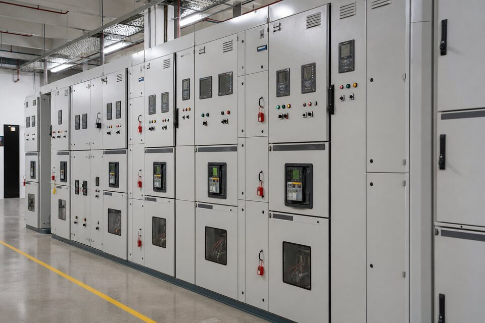

خانواده استاندارد (IEC 62271)
استانداردهای خانواده (IEC 62271) مرجع اصلی طراحی و آزمون تجهیزات کلیدزنی فشار متوسط و قوی در سطح جهان هستند. بخش عمومی این خانواده تعاریف، شرایط نامی و روشهای آزمون مشترک را مشخص میکند و بخشهای تخصصی، الزامات هر تجهیز مانند سلولهای کلیدزنی فشار متوسط، کلیدهای قدرت، سکسیونرها و فیوزها را پوشش میدهند. برای خریدار صنعتی اهمیت این خانواده در دو چیز است: اول اینکه پارامترهای پیشنهاد فنی قابل مقایسه و راستیآزمایی میشوند و دوم اینکه گزارشهای آزمون نوعی سازندگان بر مبنای یک مرجع مشترک صادر شدهاند. در مشخصات فنی پروژههای ایرانی نیز معمولا ارجاع مستقیم به بخشهای مرتبط همین خانواده داده میشود و انطباق با آن شرط پذیرش تجهیز است.

انواع سلول و پیکربندی
یک ردیف فشار متوسط معمولا از سلولهای ورودی، اندازهگیری، خروجی ترانسفورماتور، کوپلر و گاهی خازن تشکیل میشود. از نظر عایقبندی، سلولهای عایق هوایی رایجترین گزینه در سطوح ۲۰ کیلوولت ایران هستند؛ فاصلههای هوایی بزرگترند اما ساختار ساده و نگهداری آنها راحت است. سلولهای عایق گازی فشردهترند و در فضاهای محدود یا محیطهای آلوده مزیت دارند. از نظر کلیدزنی نیز سلولها با کلید وکیوم، کلید گازی یا سکسیونر عرضه میشوند. برای بارهای حساس، پیکربندی دوباس یا دارای کوپلر امکان انتقال بار بین ورودیها را فراهم میکند و تداوم سرویس را بالا میبرد؛ البته هزینه و پیچیدگی حفاظت نیز افزایش مییابد.
پارامترهای نامی و آزمونها
- ولتاژ نامی و سطح عایقی: بر اساس ولتاژ شبکه و شرایط اضافه ولتاژ.
- جریان نامی باس: با در نظر گرفتن رشد بار آینده انتخاب شود.
- جریان و زمان تحمل کوتاهمدت: مطابق مطالعه اتصال کوتاه نقطه نصب.
- آزمون قوس داخلی: برای سلولهای نصبشده در مسیر تردد پرسنل توصیه میشود.
- آزمونهای نوعی و روتین: گرمایش، عایقی، مکانیکی و سازگاری الکتریکی.
در میان آزمونها، آزمون قوس داخلی جایگاه ویژهای دارد: اگر به دلیل خطای داخلی قوسی در سلول شکل بگیرد، انرژی بسیار زیادی در زمان کوتاه آزاد میشود. سلولهای منطبق با کلاسهای (IAC) این استاندارد، این فشار و گازهای داغ را به مسیرهای کنترلشده هدایت میکنند تا اپراتور حاضر در راهروی تابلو در امان بماند. در واحدهایی که تردد پرسنل در اتاق تابلو وجود دارد، درخواست کلاس قوس داخلی مناسب یک الزام ایمنی است نه یک انتخاب لوکس.
حفاظت و مانیتورینگ سلولها
هر سلول خروجی معمولا با یک رله حفاظتی دیجیتال مجهز میشود که توابع اضافه جریان، اتصال زمین و در صورت نیاز جهتدار یا دیفرانسیل را پوشش میدهد. هماهنگی این رلهها با حفاظت بالادست شبکه توزیع و پاییندست ترانسفورماتورها باید در قالب مطالعه حفاظت انجام شود تا خطا فقط در نزدیکترین نقطه قطع گردد. بسیاری از سلولهای جدید امکان ارتباط با سیستم مانیتورینگ و ارسال وضعیت کلیدها، دمای کابلها و خطاها را دارند که در واحدهای بزرگ برای کاهش زمان عیبیابی ارزشمند است. ترانسفورماتورهای جریان و ولتاژ نصبشده در سلول اندازهگیری نیز باید کلاس دقت مناسب کنتورینگ تجاری را داشته باشند.
نکات استعلام و سفارش
برای استعلام تابلو فشار متوسط، نقشه تکخطی با جزئیات هر سلول، ولتاژ و فرکانس شبکه، نتایج مطالعه اتصال کوتاه، شرایط محیطی و الزامات خاص پروژه مانند کلاس قوس داخلی یا برندهای مجاز رله را ارسال کنید. زمان ساخت سلولهای فشار متوسط معمولا از تابلوهای فشار ضعیف طولانیتر است و تحویل برخی برندهای خارجی ممکن است چند ماه زمان ببرد؛ پس این زمان را در برنامه پروژه لحاظ نمایید. مدارک تحویلی باید شامل نقشههای چیدمان برای طراحی اتاق تابلو، گزارش آزمونها و دستورالعمل نصب و راهاندازی باشد تا نصب بدون دوبارهکاری انجام شود.
اتاق تابلو و شرایط محیطی
عملکرد قابل اتکای سلولهای فشار متوسط به شرایط اتاق تابلو وابسته است. دمای محیط باید در محدوده مجاز تجهیز نگه داشته شود و تهویه مناسب، گرمای تلفات را دفع کند؛ در مناطق گرم، ظرفیت تهویه باید بر اساس بدترین شرایط تابستان محاسبه شود. رطوبت و گرد و غبار نیز دشمن عایقبندیاند و در محیطهای مرطوب، استفاده از هیترهای ضدچگالش داخل سلولها توصیه میشود. روشنایی کافی راهروها، کف کاذب یا کانالهای کابل با پوشش مناسب و دسترسی ایمن برای مانور، الزامات دیگریاند که در طراحی اتاق تابلو باید دیده شوند. هماهنگی بین سازنده سلول و طراح ساختمان از ابتدا، از دوبارهکاریهای پرهزینه جلوگیری میکند، چون ابعاد، مسیرهای کابل و تهویه همگی به هم وابستهاند.
جمعبندی
تابلو فشار متوسط بر پایه خانواده (IEC 62271) انتخابی استاندارد برای ورودی برق واحدهای صنعتی است. با تعیین درست پارامترهای نامی بر اساس مطالعات شبکه، توجه به آزمون قوس داخلی و ارائه مدارک کامل در استعلام، سلولهایی دریافت میکنید که هم ایمنی پرسنل را تضمین میکنند و هم با رشد بار آینده سازگارند.
سوالات رایج
استاندارد (IEC 62271) چه چیزی را پوشش میدهد؟
خانوادهای از استانداردها برای تجهیزات کلیدزنی فشار قوی و متوسط که الزامات عمومی، آزمونها و مشخصات انواع سلول، کلید، سکسیونر و قطعات جانبی را تعریف میکنند.
تفاوت سلول عایق هوایی و گازی چیست؟
در سلول هوایی، فاصلههای عایقی با هوا تامین میشود و ابعاد بزرگتر است؛ در سلول گازی، هادیها در محفظه گاز عایق قرار میگیرند که ابعاد را به شدت کاهش میدهد و برای فضاهای محدود مناسب است.
آزمون قوس داخلی چیست؟
آزمونی که رفتار سلول را در صورت وقوع قوس داخلی ناشی از خطا میسنجد؛ هدف، هدایت گازها و فشار به مسیرهای ایمن و محافظت از اپراتور و تجهیزات مجاور است.
پارامترهای نامی اصلی کداماند؟
ولتاژ نامی، جریان نامی باس، جریان قطع کوتاهمدت، زمان تحمل کوتاهمدت و سطح عایقی؛ همه باید با مطالعات اتصال کوتاه و پخش بار شبکه هماهنگ باشند.
مطالب مرتبط
با ارائه تکخطی و مطالعات شبکه، سلول فشار متوسط منطبق بر (IEC 62271) عرضه میشود.
مشاهده صفحه محصول ← ثبت RFQ همین محصولتامین این تجهیزات را به پیشرو تجهیز فرتاک بسپارید
شرکت پیشرو تجهیز فرتاک تامینکننده تخصصی تجهیزات صنعتی برای پروژههای نفت، گاز، پتروشیمی، فولاد و نیروگاهی است. برای دریافت پیشنهاد فنی و قیمت، استعلام (RFQ) خود را ثبت کنید تا کارشناسان مهندسی فروش در کوتاهترین زمان پاسخ دهند.
- تامین برق صنعتیتجهیزات تابلو و حفاظتی
- تامین تجهیزات صنایع نفت و گازپکیج مواد مطابق وندورلیست